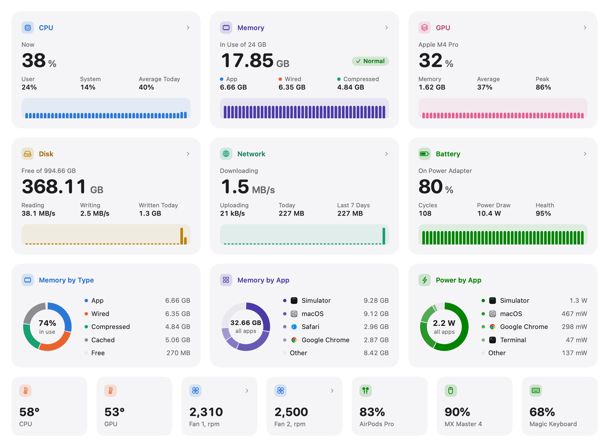
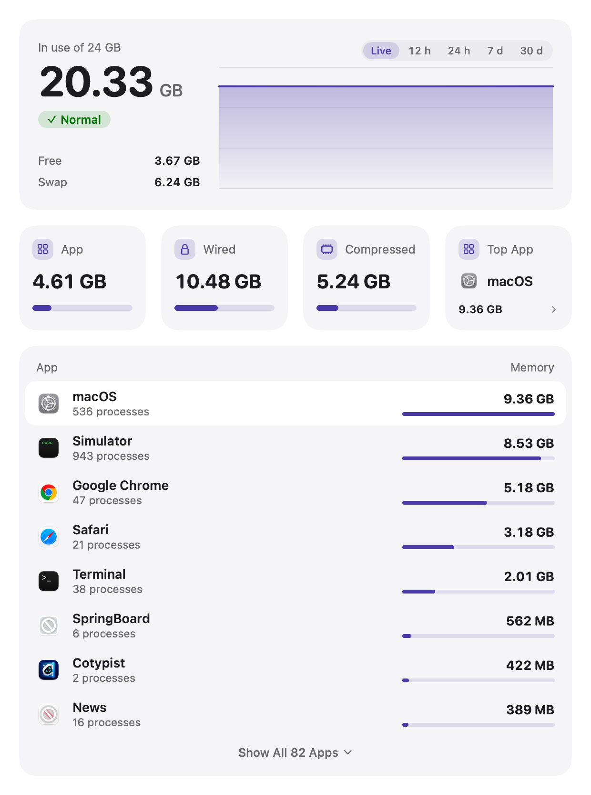
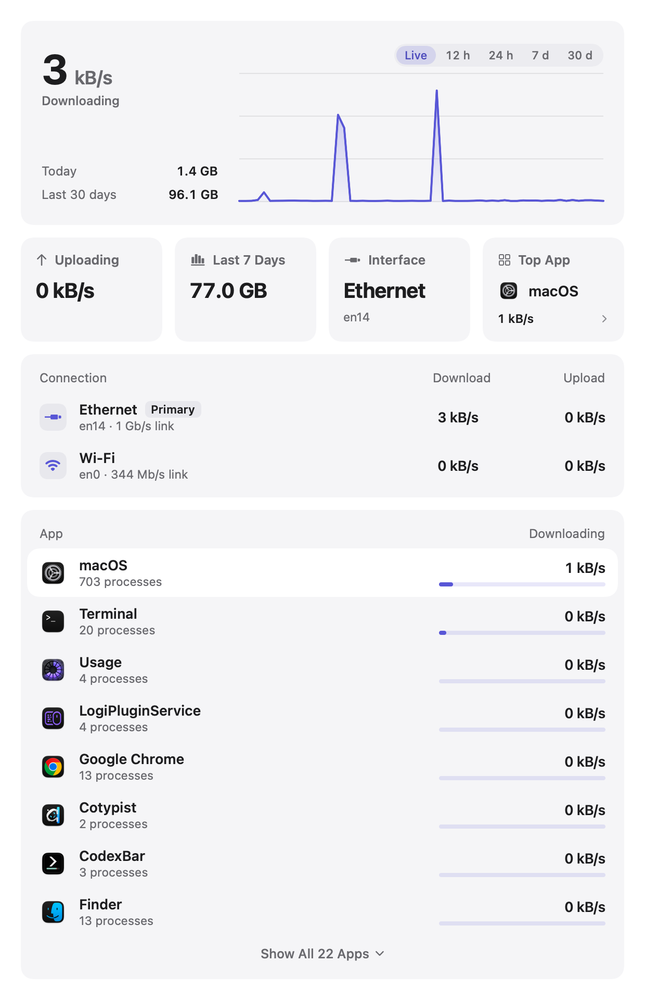
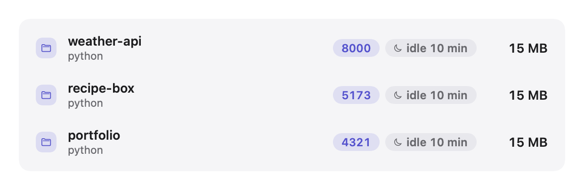

See which apps are really using your Mac
Tally counts every helper process toward the app it belongs to, so a thousand processes become a list of apps you recognize. Free, open source, and it never goes online.
Version 1.0.1 · macOS 15 or later · Apple silicon and Intel

One afternoon on the Mac Tally was built on
- 2,147processes running
- 79apps in Tally
- 0.45%CPU for Tally itself

One row per app
Chrome's renderers, your editor's language servers and every GPU helper show up under the app that started them, with a single number for each.
-
Helpers included
Renderers, plugins and background helpers count toward their app instead of cluttering the list.
-
CPU, memory, power, disk, network
Each tab ranks the apps behind its number, and any app opens to show its processes.
-
A month of history
Scroll back up to 30 days to see what ran while you were away. It's kept in one local file.

Right there in your menu bar
Glance up for a reading, or click for every metric and the apps working hardest right now.
-
Shown your way
A symbol, a live number, a small chart, or a few readings stacked on top of each other.
-
Alerts for runaway apps
A notification when something pins the CPU, leaks memory, or won't stop writing to disk.
-
A heads-up under load
The menu bar item turns into a warning symbol while memory, CPU or heat runs high.

Ethernet and Wi‑Fi, side by side
Plugged in and on Wi‑Fi at the same time? Each connection gets its own row, so you can see which one is doing the work.
-
Speeds per connection
Download and upload for every active connection, with the one macOS is using marked.
-
Link speed
The rate each connection negotiated, like 1 Gb/s over a cable or 325 Mb/s over the air.
-
Running totals
How much you've moved today, this week and over the last 30 days.

Find the dev server you forgot
Tally files local servers under the project folder they run from, along with the ports they're holding.
-
Sorted by project
See which repo is sitting on port 5173 without reaching for lsof.
-
Idle servers flagged
Servers that haven't handled anything in days are called out so they stop eating memory.
-
Stopped only when you say
One click stops a server, after you confirm. Tally never quits anything on its own.
Also in Tally
-
Temperatures and fans
How hot the chip is running and how fast the fans spin, with optional manual fan control.
-
Battery health
The same maximum capacity System Settings reports, plus cycle count and live power draw.
-
Volume per app
Turn one noisy app down without touching the others. Sound passes straight through.
-
Wireless accessories
Battery levels for connected Bluetooth headphones, mice and keyboards.
-
Snapshots
Save or copy an image of your stats or the whole dashboard, in light or dark.
-
Feels like macOS
Light and dark mode, full keyboard and VoiceOver support, and Reduce Motion respected.
Nothing leaves your Mac
A system monitor sees a lot. Tally doesn't have a server to send any of it to.
-
No network connections
No update checks, no license server, no crash reporter. Tally never opens a connection of its own.
-
No account, no analytics
There's nothing to sign up for, and no record of what you run is kept anywhere but your Mac.
-
Open source
Every line is on GitHub under the MIT license, so anyone can check these promises.
Is Tally really free?
Yes. There's no paid tier, trial, subscription or ads. Tally is MIT licensed, and every update is free.
Why does macOS warn me the first time I open it?
Tally isn't signed with a paid Apple developer certificate yet, so macOS can't check it for you. Click Done, then open System Settings › Privacy & Security, scroll down and click Open Anyway. You only do this once.
Prefer Terminal? This does the same thing:
xattr -dr com.apple.quarantine
/Applications/Tally.app
Will it slow my Mac down?
It shouldn't. With only its menu bar item running, Tally averaged under half a percent of one CPU core in our tests. It refreshes every 5 seconds by default, slows down when no window is open, and a closed window costs nothing.
Does it send anything anywhere?
No. Tally makes no network connections of its own. Your history lives in one file in your Library folder on your Mac.
Which Macs does it run on?
Any Mac with macOS 15 Sequoia or later, Apple silicon or Intel. Temperatures and power readings are more detailed on Apple silicon.
What is the fan helper?
Changing fan speeds needs administrator rights, so Tally asks once for your password and installs a small helper that only sets fan speeds. It puts every fan back to automatic when Tally quits. It's optional, and you can remove it from the fan controls.
How do I update?
Tally doesn't check for updates, because it never goes online. Download the latest version from this page or GitHub and replace the copy in your Applications folder. Your history and settings stay.
Get Tally for your Mac
Free for everyone, with nothing to sign up for. It takes about a minute to install.
Version 1.0.1 · 8 MB · macOS 15 or later